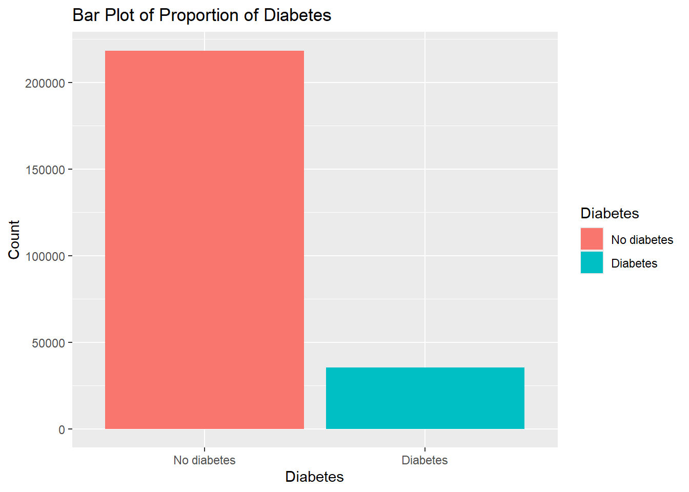
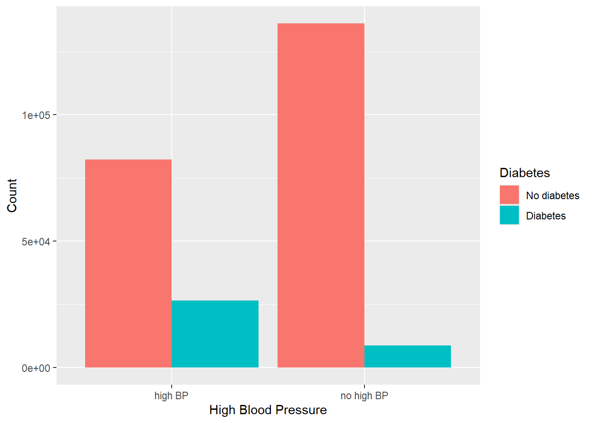
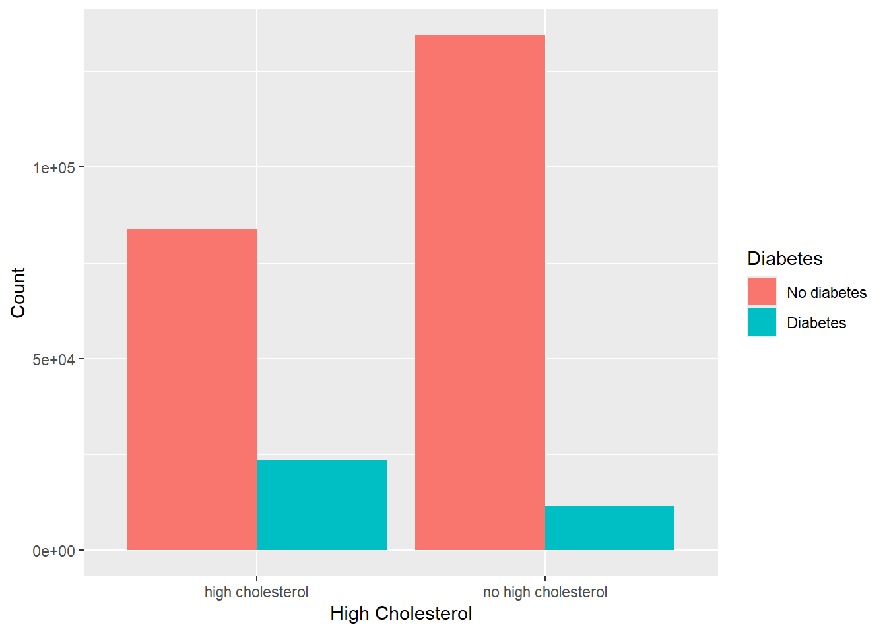
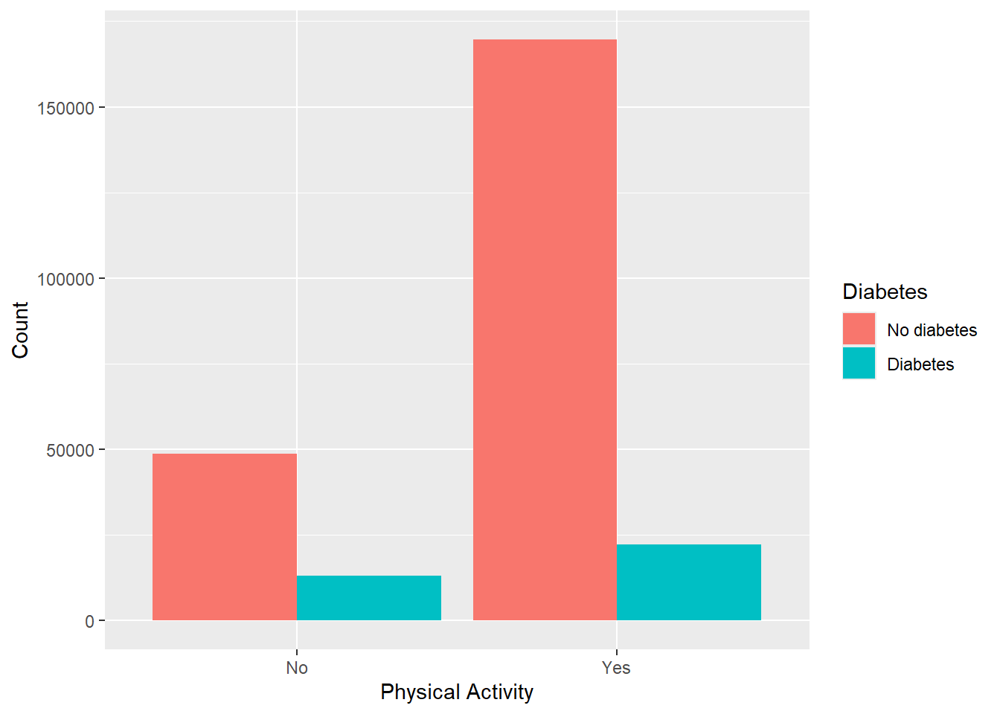
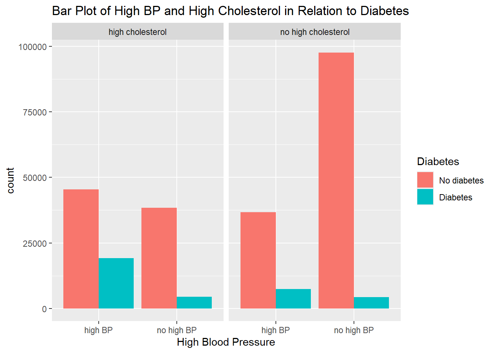
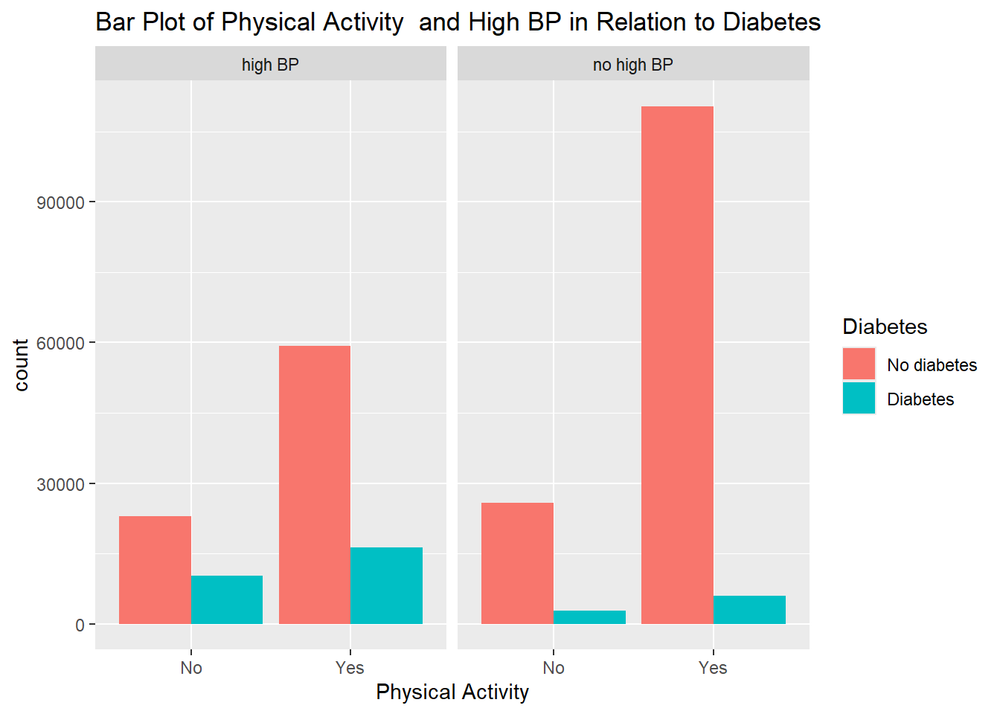
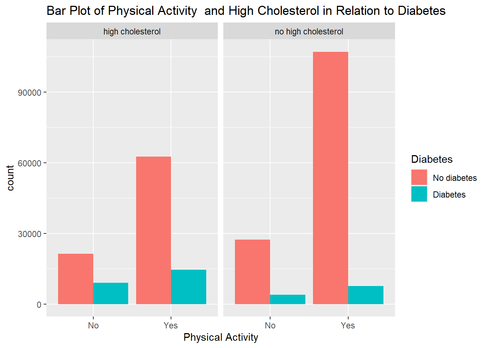

#library some packages
library(readr)
library(dplyr)EDA
Introduction
For this project, the Diabetes Health Indicators Dataset will be explored to see there is a relationship between some variables and those with diabetes or prediabetes. This EDA will look at three variables in particular: high blood pressure, high cholesterol, and if there has been any physical activity in the past 30 days.
The ADA states that about two out of three people with diabetes report having high blood pressure. This would be an important variable to look at when looking at indicators to predict if someone has diabetes or not. Similarly, the ADA also states that people with diabetes are more prone to having high cholesterol. This could be because diabetes tend to lower “good” cholesterol and raise “bad” cholesterol. By looking at cholesterol, this can be an indicator of diabetes and would be a good variable to explore. Looking at the physical activity variable is important in predicting whether a person has diabetes or not because studies have shown that exercise can directly reduce blood glucose levels. This means that physical activity is a good way of preventing or controlling diabetes.
In this EDA, we will look at how these three variables relate to the response variable showing a person having diabetes are not. We will explore how the variables individually relate to the response variable as well as how they interact to give the response variable.
Data
The first step is to read in the data set. For this section, all of the data will be displayed.
#read in data
diabetes_data <- read_csv("diabetes_binary_health_indicators_BRFSS2015.csv", col_types = c("Diabetes_binary" = "factor", "HighBP" = "factor", "HighChol" = "factor", "CholCheck" = "factor", "Smoker" = "factor", "Stroke" = "factor", "HeartDiseaseorAttack" = "factor", "PhysActivity" = "factor", "Fruits" = "factor", "Veggies" = "factor", "HvyAlcoholConsump" = "factor", "AnyHealthcare" = "factor", "NoDocbcCost" = "factor", "GenHlth" = "factor", "DiffWalk" = "factor", "Sex" = "factor", "Age" = "factor", "Education" = "factor", "Income" = "factor")) |>
mutate(Diabetes_binary = recode(Diabetes_binary, "0.0" = "No diabetes", "1.0" = "Diabetes")) |>
mutate(HighBP = recode(HighBP, "0.0" = "no high BP", "1.0" = "high BP")) |>
mutate(HighChol = recode(HighChol, "0.0" = "no high cholesterol", "1.0" = "high cholesterol")) |>
mutate(CholCheck = recode(CholCheck, "0.0" = "no cholesterol check", "1.0" = "cholesterol check")) |>
mutate(Smoker = recode(Smoker, "0.0" = "No", "1.0" = "Yes")) |>
mutate(Stroke = recode(Stroke, "0.0" = "No", "1.0" = "Yes")) |>
mutate(HeartDiseaseorAttack = recode(HeartDiseaseorAttack, "0.0" = "No", "1.0" = "Yes")) |>
mutate(PhysActivity = recode(PhysActivity, "0.0" = "No", "1.0" = "Yes")) |>
mutate(Fruits = recode(Fruits, "0.0" = "No", "1.0" = "Yes")) |>
mutate(Veggies = recode(Veggies, "0.0" = "No", "1.0" = "Yes")) |>
mutate(HvyAlcoholConsump = recode(HvyAlcoholConsump, "0.0" = "No", "1.0" = "Yes")) |>
mutate(AnyHealthcare = recode(AnyHealthcare, "0.0" = "No", "1.0" = "Yes")) |>
mutate(NoDocbcCost = recode(NoDocbcCost, "0.0" = "No", "1.0" = "Yes")) |>
mutate(Fruits = recode(Fruits, "0.0" = "No", "1.0" = "Yes")) |>
mutate(GenHlth = recode(GenHlth, "1.0" = "excellent", "2.0" = "very good", "3.0" = "good", "4.0" = "fair", "5.0" = "poor")) |>
mutate(DiffWalk = recode(DiffWalk, "0.0" = "No", "1.0" = "Yes")) |>
mutate(Sex = recode(Sex, "0.0" = "female", "1.0" = "male")) |>
mutate(Age = recode(Age, "1.0" = "18-24", "2.0" = "25-29", "3.0" = "30-34", "4.0" = "35-39", "5.0" = "40-44", "6.0" = "45-49", "7.0" = "50-54", "8.0" = "55-59", "9.0" = "60-64", "10.0" = "65-69", "11.0" = "70-74", "12.0" = "75-79", "13.0" = "80 or older")) |>
mutate(Education = recode(Education, "1.0" = "never attended school", "2.0" = "elementary", "3.0" = "junior high", "4.0" = "high school", "5.0" = "undergraduate", "6.0" = "postgraduate")) |>
mutate(Income = recode(Income, "1.0" = "less than $10,000", "2.0" = "less than $15,000", "3.0" = "less than $20,000", "4.0" = "less than $$25,000", "5.0" = "less than $35,000", "6.0" = "less than $50,000", "7.0" = "less than $75,000", "8.0" = "$75,000 or more"))
diabetes_data# A tibble: 253,680 × 22
Diabetes_binary HighBP HighChol CholCheck BMI Smoker Stroke
<fct> <fct> <fct> <fct> <dbl> <fct> <fct>
1 No diabetes high BP high cholesterol cholester… 40 Yes No
2 No diabetes no high BP no high cholesterol no choles… 25 Yes No
3 No diabetes high BP high cholesterol cholester… 28 No No
4 No diabetes high BP no high cholesterol cholester… 27 No No
5 No diabetes high BP high cholesterol cholester… 24 No No
6 No diabetes high BP high cholesterol cholester… 25 Yes No
7 No diabetes high BP no high cholesterol cholester… 30 Yes No
8 No diabetes high BP high cholesterol cholester… 25 Yes No
9 Diabetes high BP high cholesterol cholester… 30 Yes No
10 No diabetes no high BP no high cholesterol cholester… 24 No No
# ℹ 253,670 more rows
# ℹ 15 more variables: HeartDiseaseorAttack <fct>, PhysActivity <fct>,
# Fruits <fct>, Veggies <fct>, HvyAlcoholConsump <fct>, AnyHealthcare <fct>,
# NoDocbcCost <fct>, GenHlth <fct>, MentHlth <dbl>, PhysHlth <dbl>,
# DiffWalk <fct>, Sex <fct>, Age <fct>, Education <fct>, Income <fct>#check for missing data
sum(is.na(diabetes_data))[1] 0There are no missing data in this data set.
Summarizations
For the Summarization section of this EDA, summary statistics and plots will be made focusing on the response variable Diabetes_binary and the three explanatory variables high blood pressure, high cholesterol, and physical activity.
#library some packages
library(ggplot2)First, we will make some contingency tables and plots to look at the proportion of the data with diabetes.
#contingency table of Diabetes_binary
table(diabetes_data$Diabetes_binary)
No diabetes Diabetes
218334 35346 #bar plot of Diabetes_binary
ggplot(diabetes_data, aes(x = Diabetes_binary, fill = Diabetes_binary)) +
geom_bar() +
labs(x = "Diabetes", y = "Count", title = "Bar Plot of Proportion of Diabetes") +
scale_fill_discrete(name = "Diabetes")
Looking at both the contingency table and the bar plot, there seems to be a higher proportion of the data set that reports not having diabetes compared to having diabetes.
Next, we will compare each of the three explanatory variables separately with the response variable. we will start with the relationship between high blood pressure and diabetes. A contingency table and barplot can be made to show this relationship.
#contingency table of Diabetes_binary and HighBP
table(diabetes_data$Diabetes_binary, diabetes_data$HighBP)
high BP no high BP
No diabetes 82225 136109
Diabetes 26604 8742#barplot of Diabetes_binary and HighBP
ggplot(diabetes_data, aes(x = HighBP, fill = Diabetes_binary)) +
geom_bar(position = "dodge") +
labs(x = "High Blood Pressure", fill = "Diabetes", y = "Count")
It looks like those with diabetes are more likely to have high blood pressure than not, while those without diabetes tend to not have high blood pressure.
Now for the relationship between high cholesterol and diabetes. We use the contingency table and bar plot to show the relationship.
#contingency table of Diabetes_binary and HighChol
table(diabetes_data$Diabetes_binary, diabetes_data$HighChol)
high cholesterol no high cholesterol
No diabetes 83905 134429
Diabetes 23686 11660#barplot of Diabetes_binary and HighChol
ggplot(diabetes_data, aes(x = HighChol, fill = Diabetes_binary)) +
geom_bar(position = "dodge") +
labs(x = "High Cholesterol", fill = "Diabetes", y = "Count")
There seems to be a similar relationship between having high cholesterol and having diabetes to the relationship between high blood pressure and diabetes.
The last variable we will look at is the relationship between physical activity and diabetes.
#contingency table of Diabetes_binary and PhysAtivity
table(diabetes_data$Diabetes_binary, diabetes_data$PhysActivity)
No Yes
No diabetes 48701 169633
Diabetes 13059 22287#bar plot of Diabetes_binary and PhysActivity
ggplot(diabetes_data, aes(x = PhysActivity, fill = Diabetes_binary)) +
geom_bar(position = "dodge") +
labs(x = "Physical Activity", fill = "Diabetes", y = "Count")
The relationship between doing physical activities within the last 30 days and having diabetes is different than the other variables. We see that both people with and without diabetes have had some physical activity. This may show that physical activity does not cause or prevent diabetes, but is a good way to control diabetes in those that already are diagnosed.
While looking at the relationship between the response variable and a single explanatory variable is useful, we can also look at how multiple variables work together and their relationship with the response variable. We can look first at correlation between high blood pressure and high cholesterol in relation to diabetes.
#contingency table of HighBP and HighChol compared to Diabetes_binary
table(diabetes_data$HighBP, diabetes_data$HighChol, diabetes_data$Diabetes_binary), , = No diabetes
high cholesterol no high cholesterol
high BP 45447 36778
no high BP 38458 97651
, , = Diabetes
high cholesterol no high cholesterol
high BP 19213 7391
no high BP 4473 4269#bar plot of HighBP and HighChol compared to Diabetes_binary
ggplot(diabetes_data, aes(x = HighBP, fill = Diabetes_binary)) +
geom_bar(position = "dodge") +
facet_wrap(~ HighChol) +
labs(x = "High Blood Pressure", fill = "Diabetes", title = "Bar Plot of High BP and High Cholesterol in Relation to Diabetes")
Looking at the contingency table and the bar plot showing how diabetes relate to high blood pressure and high cholesterol, we can see that the highest proportion of those with diabetes have both high blood pressure and high cholesterol. This shows that having high blood pressure along with high cholesterol can lead to having diabetes. Following this, the next highest proportion of those with diabetes have high blood pressure, but does not have high cholesterol. This could show that blood pressure is a better indicator when it comes to diagnosing diabetes.
We can continue this, adding physical activity to see its relationship with high blood pressure and high cholesterol.
#contingency table of HighBP and PhysActivity compared to Diabetes_binary
table(diabetes_data$HighBP, diabetes_data$PhysActivity, diabetes_data$Diabetes_binary), , = No diabetes
No Yes
high BP 22961 59264
no high BP 25740 110369
, , = Diabetes
No Yes
high BP 10284 16320
no high BP 2775 5967#bar plot of HighBP and PhysActivity compared to Diabetes_binary
ggplot(diabetes_data, aes(x = PhysActivity, fill = Diabetes_binary)) +
geom_bar(position = "dodge") +
facet_wrap(~ HighBP) +
labs(x = "Physical Activity", fill = "Diabetes", title = "Bar Plot of Physical Activity and High BP in Relation to Diabetes")
We can see that for those with diabetes, physical activity contributes less to the proportions than having high blood pressure. This could mean that physical activity would not be a great indicator to predict whether a person has diabetes or not.
We can compare that relationship to physical activity and high cholesterol.
#contingency table of HighChol and PhysActivity compared to Diabetes_binary
table(diabetes_data$HighChol, diabetes_data$PhysActivity, diabetes_data$Diabetes_binary), , = No diabetes
No Yes
high cholesterol 21340 62565
no high cholesterol 27361 107068
, , = Diabetes
No Yes
high cholesterol 9053 14633
no high cholesterol 4006 7654#bar plot of HighChol and PhysActivity compared to Diabetes_binary
ggplot(diabetes_data, aes(x = PhysActivity, fill = Diabetes_binary)) +
geom_bar(position = "dodge") +
facet_wrap(~ HighChol) +
labs(x = "Physical Activity", fill = "Diabetes", title = "Bar Plot of Physical Activity and High Cholesterol in Relation to Diabetes")
It seems like the relationship is similar with having high cholesterol being a bigger indicator of diabetes than physical activity.
In summary of this EDA, we can compare different variables through statistical summaries and plots to show the relationship they have with the response variable of Diabetes_binary. After exploring three of the variables, we can conclude that having high blood pressure is a good indicator of having diabetes. Having high cholesterol can also contribute to having diabetes, but physical activity may not be the best at showing whether a person has diabetes. We will be able to use this information in the modeling by using variables that are better indicators of diabetes than others to be able to fit a model that can predict diabetes in a person well.